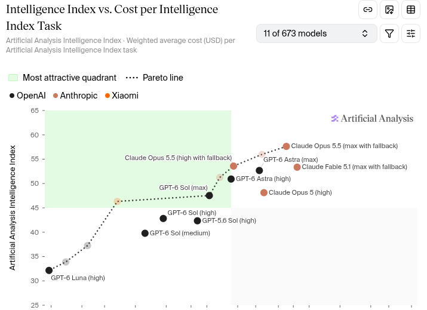

Opus 5.5 and GPT-6 Sol

Opus 5.5 and GPT-6 Sol, Terra and Luna just dropped. GPT-6 Astra is still the frontier model, but it's good to have cheaper options since Astra wipes out my weekly usage in just a few days with website or video game work.
As it stands, Opus 5.5 is the most intelligent model out there. Nothing else compares, and it even sits above Fable. The dollar figures here are the cost per benchmark task on the Artificial Analysis graph. Opus 5.5, however, is very expensive: it's $5.98 on max and even with high it's $1.82. Astra max sits on the same level as Fable 5.1 max while costing less than half as much, but as it stands, Opus 5.5 is in the lead.

I just got used to GPT-5.6, but those models are being phased out. I have always used high reasoning, and GPT-6 Sol is the cheapest option for the level of reasoning I want. The new GPT-6 Sol is much cheaper than 5.6 Sol while scoring one point higher on this graph, which surprised me; 5.6 Sol high was $0.81 and now GPT-6 Sol high is $0.37. That's very impressive, a crazy slash in price. So it all depends on what you value: sheer intelligence or cost. For me, I value decent reasoning but at the lowest price possible; Astra was simply too expensive to get much use out of on my Plus subscription. OpenAI have reduced the costs of other models, but I'm mainly focused on Sol.
But we've come far. The quality is insane, both in what I've used it for (hardware repairs, website building and messing around on Debian) and compared with what was normal even a few months ago. Hallucination rates have dropped significantly in my experience, and models can explain where they went wrong. I had trouble with constant gaslighting from GPT around 2024–2025, but it's limited now. The pace is pretty wild; I was just getting used to 5.6 Sol, which is now obsolete.